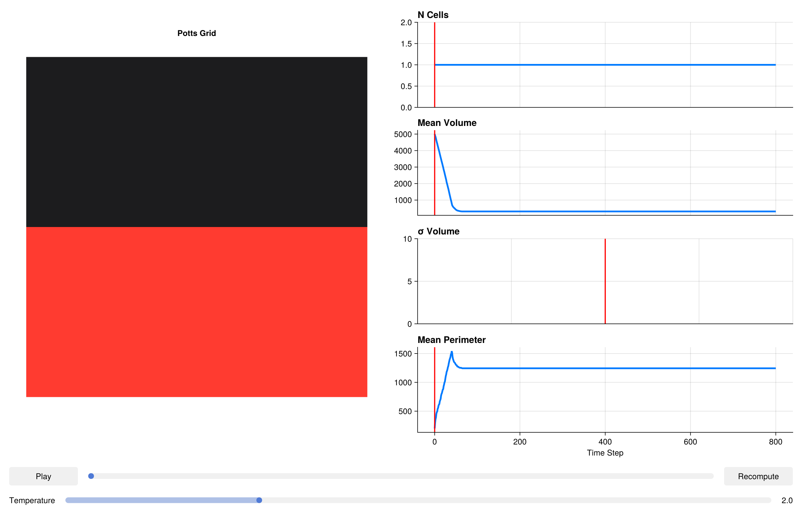

using CairoMakie
CairoMakie.activate!()Epithelial Sheet & Tissue Mechanics
Epithelial monolayers are the fundamental structural unit of organs such as the gut, skin, and lung. Their mechanical properties — stiffness, cohesion, and resistance to shear — emerge from the interplay between cell-cell adhesion and cytoskeletal tension. A widely used theoretical framework for epithelial mechanics is the vertex model, but the Potts captures similar physics at the level of individual lattice sites, making it straightforward to model irregular cell shapes and topological rearrangements (T1/T2 transitions) without explicit bookkeeping.
In this tutorial we tile a 150 × 150 grid with epithelial cells and demonstrate how SurfaceAreaComponent combined with VolumeComponent produces a mechanically stable sheet where cells resist both compression and stretching.
Packages
using PottsToolkit
using MakiePotts
using Statistics: mean, stdCell Types
A single epithelial cell type plus the background medium.
Epithelial = CellType(:Epithelial)
Medium = CellType(:Medium, is_background = true)CellType(:Medium, true)Energy Model — Volume, Surface Area, and Adhesion
Three components define the mechanical energy of an epithelial sheet:
VolumeComponent: incompressibility — cells resist area changes with stiffness λ_V = 5.0. Target volume ≈ 100 sites ≈ a 10×10 pixel cell.
SurfaceAreaComponent: cortical tension — penalises deviation of the cell perimeter from the target value. λS = 1.0 is kept lower than λV to allow cell shape fluctuations while maintaining overall area. A target perimeter of 40 corresponds to a roughly circular cell of area 100.
AdhesionComponent: cell-cell stickiness. Low J(Epithelial,Epithelial) relative to J(Epithelial,Medium) ensures that cells prefer to be in contact with each other, forming the coherent sheet. If J(cell,cell) were made larger, the sheet would fragment into isolated rounded-up cells.
sys = PottsSystem(
cell_types = [Medium, Epithelial],
penalties = [
VolumeComponent(
Epithelial => (λ = 5.0f0, target = 100),
),
SurfaceAreaComponent(
Epithelial => (λ = 1.0f0, target = 40),
),
AdhesionComponent(
(Epithelial, Epithelial) => 3.0f0,
(Epithelial, Medium) => 18.0f0
)
]
)PottsSystem{Tuple{}}(CellType[CellType(:Medium, true), CellType(:Epithelial, false)], Any[VolumeComponent{Rigid}(Dict{CellType, @NamedTuple{target::Float32, λ::Float32}}(CellType(:Epithelial, false) => (target = 100.0, λ = 5.0))), SurfaceAreaComponent{Rigid}(Dict{CellType, @NamedTuple{target::Float32, λ::Float32}}(CellType(:Epithelial, false) => (target = 40.0, λ = 1.0)), 1.0f0), AdhesionComponent{Rigid, false}(Dict{Tuple{CellType, CellType}, Float32}((CellType(:Medium, true), CellType(:Epithelial, false)) => 18.0, (CellType(:Epithelial, false), CellType(:Epithelial, false)) => 3.0))], (), 10)Problem — Dense Monolayer
We initialise the sheet covering exactly the bottom half of a 100 × 100 grid using RectangleLayout. This perfectly sets up a scratch wound assay, where the cells collectively migrate upwards to fill the empty space.
prob = PottsProblem(
sys,
RectangleLayout(Epithelial, (1, 1), (100, 50)),
(100, 100);
tspan = (0, 800),
topology = VonNeumannTopology{2}()
)
alg = CheckerboardMetropolis(T = 2.0f0, sweeps_per_step = 10)
sol = solve(prob, alg; saveat = 8)retcode: Success
Interpolation: No interpolation
t: 101-element Vector{Int64}:
0
8
16
24
32
40
48
56
64
72
⋮
736
744
752
760
768
776
784
792
800
u: 101-element Vector{Any}:
(grid = UInt32[0x00000001 0x00000001 … 0x00000000 0x00000000; 0x00000001 0x00000001 … 0x00000000 0x00000000; … ; 0x00000001 0x00000001 … 0x00000000 0x00000000; 0x00000001 0x00000001 … 0x00000000 0x00000000], cell_data = @NamedTuple{volumes::Int32, target_volumes::Int32, surface_areas::Int32, target_surface_areas::Int32, cell_types::UInt8, pressures::Float32, tensions::Float32, anchor_x::Float32, anchor_y::Float32, anchor_z::Float32, force_x::Float32, force_y::Float32, force_z::Float32, target_lengths::Float32, current_lengths::Float32, major_axis_x::Float32, major_axis_y::Float32, major_axis_z::Float32, length_pressures::Float32, com_acc_sin_x::Float32, com_acc_cos_x::Float32, com_acc_sin_y::Float32, com_acc_cos_y::Float32, com_acc_sin_z::Float32, com_acc_cos_z::Float32, inertia_xx::Float32, inertia_yy::Float32, inertia_zz::Float32, inertia_xy::Float32, inertia_xz::Float32, inertia_yz::Float32, volume_lambdas::Float32, surface_area_lambdas::Float32, length_lambdas::Float32, adhesion_modifiers::Float32}[(volumes = 5000, target_volumes = 100, surface_areas = 200, target_surface_areas = 40, cell_types = 0x01, pressures = 0.0, tensions = 0.0, anchor_x = 0.036818244, anchor_y = 24.500002, anchor_z = 0.0, force_x = 0.0, force_y = 0.0, force_z = 0.0, target_lengths = 0.0, current_lengths = 0.0, major_axis_x = 0.0, major_axis_y = 0.0, major_axis_z = 0.0, length_pressures = 0.0, com_acc_sin_x = 4.3958426f-7, com_acc_cos_x = 0.00019001961, com_acc_sin_y = 3182.0735, com_acc_cos_y = 100.00005, com_acc_sin_z = 0.0, com_acc_cos_z = 0.0, inertia_xx = 0.0, inertia_yy = 0.0, inertia_zz = 0.0, inertia_xy = 0.0, inertia_xz = 0.0, inertia_yz = 0.0, volume_lambdas = 0.0, surface_area_lambdas = 0.0, length_lambdas = 0.0, adhesion_modifiers = 0.0)], N_cells = Base.RefValue{Int64}(1))
(grid = UInt32[0x00000000 0x00000000 … 0x00000000 0x00000000; 0x00000000 0x00000000 … 0x00000000 0x00000000; … ; 0x00000000 0x00000000 … 0x00000000 0x00000000; 0x00000001 0x00000000 … 0x00000000 0x00000000], cell_data = @NamedTuple{volumes::Int32, target_volumes::Int32, surface_areas::Int32, target_surface_areas::Int32, cell_types::UInt8, pressures::Float32, tensions::Float32, anchor_x::Float32, anchor_y::Float32, anchor_z::Float32, force_x::Float32, force_y::Float32, force_z::Float32, target_lengths::Float32, current_lengths::Float32, major_axis_x::Float32, major_axis_y::Float32, major_axis_z::Float32, length_pressures::Float32, com_acc_sin_x::Float32, com_acc_cos_x::Float32, com_acc_sin_y::Float32, com_acc_cos_y::Float32, com_acc_sin_z::Float32, com_acc_cos_z::Float32, inertia_xx::Float32, inertia_yy::Float32, inertia_zz::Float32, inertia_xy::Float32, inertia_xz::Float32, inertia_yz::Float32, volume_lambdas::Float32, surface_area_lambdas::Float32, length_lambdas::Float32, adhesion_modifiers::Float32}[(volumes = 4216, target_volumes = 100, surface_areas = 556, target_surface_areas = 40, cell_types = 0x01, pressures = 0.0, tensions = 1035.492, anchor_x = 0.036818244, anchor_y = 24.500002, anchor_z = 0.0, force_x = 0.0, force_y = 0.0, force_z = 0.0, target_lengths = 0.0, current_lengths = 0.0, major_axis_x = 0.0, major_axis_y = 0.0, major_axis_z = 0.0, length_pressures = 0.0, com_acc_sin_x = 4.3958426f-7, com_acc_cos_x = 0.00019001961, com_acc_sin_y = 3182.0735, com_acc_cos_y = 100.00005, com_acc_sin_z = 0.0, com_acc_cos_z = 0.0, inertia_xx = 0.0, inertia_yy = 0.0, inertia_zz = 0.0, inertia_xy = 0.0, inertia_xz = 0.0, inertia_yz = 0.0, volume_lambdas = 0.0, surface_area_lambdas = 0.0, length_lambdas = 0.0, adhesion_modifiers = 0.0)], N_cells = Base.RefValue{Int64}(1))
(grid = UInt32[0x00000000 0x00000000 … 0x00000000 0x00000000; 0x00000000 0x00000000 … 0x00000000 0x00000000; … ; 0x00000000 0x00000000 … 0x00000000 0x00000000; 0x00000001 0x00000000 … 0x00000000 0x00000000], cell_data = @NamedTuple{volumes::Int32, target_volumes::Int32, surface_areas::Int32, target_surface_areas::Int32, cell_types::UInt8, pressures::Float32, tensions::Float32, anchor_x::Float32, anchor_y::Float32, anchor_z::Float32, force_x::Float32, force_y::Float32, force_z::Float32, target_lengths::Float32, current_lengths::Float32, major_axis_x::Float32, major_axis_y::Float32, major_axis_z::Float32, length_pressures::Float32, com_acc_sin_x::Float32, com_acc_cos_x::Float32, com_acc_sin_y::Float32, com_acc_cos_y::Float32, com_acc_sin_z::Float32, com_acc_cos_z::Float32, inertia_xx::Float32, inertia_yy::Float32, inertia_zz::Float32, inertia_xy::Float32, inertia_xz::Float32, inertia_yz::Float32, volume_lambdas::Float32, surface_area_lambdas::Float32, length_lambdas::Float32, adhesion_modifiers::Float32}[(volumes = 3376, target_volumes = 100, surface_areas = 798, target_surface_areas = 40, cell_types = 0x01, pressures = 0.0, tensions = 1509.858, anchor_x = 0.036818244, anchor_y = 24.500002, anchor_z = 0.0, force_x = 0.0, force_y = 0.0, force_z = 0.0, target_lengths = 0.0, current_lengths = 0.0, major_axis_x = 0.0, major_axis_y = 0.0, major_axis_z = 0.0, length_pressures = 0.0, com_acc_sin_x = 4.3958426f-7, com_acc_cos_x = 0.00019001961, com_acc_sin_y = 3182.0735, com_acc_cos_y = 100.00005, com_acc_sin_z = 0.0, com_acc_cos_z = 0.0, inertia_xx = 0.0, inertia_yy = 0.0, inertia_zz = 0.0, inertia_xy = 0.0, inertia_xz = 0.0, inertia_yz = 0.0, volume_lambdas = 0.0, surface_area_lambdas = 0.0, length_lambdas = 0.0, adhesion_modifiers = 0.0)], N_cells = Base.RefValue{Int64}(1))
(grid = UInt32[0x00000000 0x00000000 … 0x00000000 0x00000000; 0x00000000 0x00000000 … 0x00000000 0x00000000; … ; 0x00000000 0x00000000 … 0x00000000 0x00000000; 0x00000001 0x00000000 … 0x00000000 0x00000000], cell_data = @NamedTuple{volumes::Int32, target_volumes::Int32, surface_areas::Int32, target_surface_areas::Int32, cell_types::UInt8, pressures::Float32, tensions::Float32, anchor_x::Float32, anchor_y::Float32, anchor_z::Float32, force_x::Float32, force_y::Float32, force_z::Float32, target_lengths::Float32, current_lengths::Float32, major_axis_x::Float32, major_axis_y::Float32, major_axis_z::Float32, length_pressures::Float32, com_acc_sin_x::Float32, com_acc_cos_x::Float32, com_acc_sin_y::Float32, com_acc_cos_y::Float32, com_acc_sin_z::Float32, com_acc_cos_z::Float32, inertia_xx::Float32, inertia_yy::Float32, inertia_zz::Float32, inertia_xy::Float32, inertia_xz::Float32, inertia_yz::Float32, volume_lambdas::Float32, surface_area_lambdas::Float32, length_lambdas::Float32, adhesion_modifiers::Float32}[(volumes = 2547, target_volumes = 100, surface_areas = 1014, target_surface_areas = 40, cell_types = 0x01, pressures = 0.0, tensions = 1956.759, anchor_x = 0.036818244, anchor_y = 24.500002, anchor_z = 0.0, force_x = 0.0, force_y = 0.0, force_z = 0.0, target_lengths = 0.0, current_lengths = 0.0, major_axis_x = 0.0, major_axis_y = 0.0, major_axis_z = 0.0, length_pressures = 0.0, com_acc_sin_x = 4.3958426f-7, com_acc_cos_x = 0.00019001961, com_acc_sin_y = 3182.0735, com_acc_cos_y = 100.00005, com_acc_sin_z = 0.0, com_acc_cos_z = 0.0, inertia_xx = 0.0, inertia_yy = 0.0, inertia_zz = 0.0, inertia_xy = 0.0, inertia_xz = 0.0, inertia_yz = 0.0, volume_lambdas = 0.0, surface_area_lambdas = 0.0, length_lambdas = 0.0, adhesion_modifiers = 0.0)], N_cells = Base.RefValue{Int64}(1))
(grid = UInt32[0x00000000 0x00000000 … 0x00000000 0x00000000; 0x00000000 0x00000000 … 0x00000000 0x00000000; … ; 0x00000000 0x00000000 … 0x00000000 0x00000000; 0x00000001 0x00000000 … 0x00000000 0x00000000], cell_data = @NamedTuple{volumes::Int32, target_volumes::Int32, surface_areas::Int32, target_surface_areas::Int32, cell_types::UInt8, pressures::Float32, tensions::Float32, anchor_x::Float32, anchor_y::Float32, anchor_z::Float32, force_x::Float32, force_y::Float32, force_z::Float32, target_lengths::Float32, current_lengths::Float32, major_axis_x::Float32, major_axis_y::Float32, major_axis_z::Float32, length_pressures::Float32, com_acc_sin_x::Float32, com_acc_cos_x::Float32, com_acc_sin_y::Float32, com_acc_cos_y::Float32, com_acc_sin_z::Float32, com_acc_cos_z::Float32, inertia_xx::Float32, inertia_yy::Float32, inertia_zz::Float32, inertia_xy::Float32, inertia_xz::Float32, inertia_yz::Float32, volume_lambdas::Float32, surface_area_lambdas::Float32, length_lambdas::Float32, adhesion_modifiers::Float32}[(volumes = 1691, target_volumes = 100, surface_areas = 1284, target_surface_areas = 40, cell_types = 0x01, pressures = 0.0, tensions = 2472.927, anchor_x = 0.036818244, anchor_y = 24.500002, anchor_z = 0.0, force_x = 0.0, force_y = 0.0, force_z = 0.0, target_lengths = 0.0, current_lengths = 0.0, major_axis_x = 0.0, major_axis_y = 0.0, major_axis_z = 0.0, length_pressures = 0.0, com_acc_sin_x = 4.3958426f-7, com_acc_cos_x = 0.00019001961, com_acc_sin_y = 3182.0735, com_acc_cos_y = 100.00005, com_acc_sin_z = 0.0, com_acc_cos_z = 0.0, inertia_xx = 0.0, inertia_yy = 0.0, inertia_zz = 0.0, inertia_xy = 0.0, inertia_xz = 0.0, inertia_yz = 0.0, volume_lambdas = 0.0, surface_area_lambdas = 0.0, length_lambdas = 0.0, adhesion_modifiers = 0.0)], N_cells = Base.RefValue{Int64}(1))
(grid = UInt32[0x00000000 0x00000000 … 0x00000000 0x00000000; 0x00000000 0x00000000 … 0x00000000 0x00000000; … ; 0x00000000 0x00000000 … 0x00000000 0x00000000; 0x00000001 0x00000000 … 0x00000000 0x00000000], cell_data = @NamedTuple{volumes::Int32, target_volumes::Int32, surface_areas::Int32, target_surface_areas::Int32, cell_types::UInt8, pressures::Float32, tensions::Float32, anchor_x::Float32, anchor_y::Float32, anchor_z::Float32, force_x::Float32, force_y::Float32, force_z::Float32, target_lengths::Float32, current_lengths::Float32, major_axis_x::Float32, major_axis_y::Float32, major_axis_z::Float32, length_pressures::Float32, com_acc_sin_x::Float32, com_acc_cos_x::Float32, com_acc_sin_y::Float32, com_acc_cos_y::Float32, com_acc_sin_z::Float32, com_acc_cos_z::Float32, inertia_xx::Float32, inertia_yy::Float32, inertia_zz::Float32, inertia_xy::Float32, inertia_xz::Float32, inertia_yz::Float32, volume_lambdas::Float32, surface_area_lambdas::Float32, length_lambdas::Float32, adhesion_modifiers::Float32}[(volumes = 797, target_volumes = 100, surface_areas = 1542, target_surface_areas = 40, cell_types = 0x01, pressures = 0.0, tensions = 2995.052, anchor_x = 0.036818244, anchor_y = 24.500002, anchor_z = 0.0, force_x = 0.0, force_y = 0.0, force_z = 0.0, target_lengths = 0.0, current_lengths = 0.0, major_axis_x = 0.0, major_axis_y = 0.0, major_axis_z = 0.0, length_pressures = 0.0, com_acc_sin_x = 4.3958426f-7, com_acc_cos_x = 0.00019001961, com_acc_sin_y = 3182.0735, com_acc_cos_y = 100.00005, com_acc_sin_z = 0.0, com_acc_cos_z = 0.0, inertia_xx = 0.0, inertia_yy = 0.0, inertia_zz = 0.0, inertia_xy = 0.0, inertia_xz = 0.0, inertia_yz = 0.0, volume_lambdas = 0.0, surface_area_lambdas = 0.0, length_lambdas = 0.0, adhesion_modifiers = 0.0)], N_cells = Base.RefValue{Int64}(1))
(grid = UInt32[0x00000000 0x00000000 … 0x00000000 0x00000000; 0x00000000 0x00000000 … 0x00000000 0x00000000; … ; 0x00000000 0x00000000 … 0x00000000 0x00000000; 0x00000001 0x00000000 … 0x00000000 0x00000000], cell_data = @NamedTuple{volumes::Int32, target_volumes::Int32, surface_areas::Int32, target_surface_areas::Int32, cell_types::UInt8, pressures::Float32, tensions::Float32, anchor_x::Float32, anchor_y::Float32, anchor_z::Float32, force_x::Float32, force_y::Float32, force_z::Float32, target_lengths::Float32, current_lengths::Float32, major_axis_x::Float32, major_axis_y::Float32, major_axis_z::Float32, length_pressures::Float32, com_acc_sin_x::Float32, com_acc_cos_x::Float32, com_acc_sin_y::Float32, com_acc_cos_y::Float32, com_acc_sin_z::Float32, com_acc_cos_z::Float32, inertia_xx::Float32, inertia_yy::Float32, inertia_zz::Float32, inertia_xy::Float32, inertia_xz::Float32, inertia_yz::Float32, volume_lambdas::Float32, surface_area_lambdas::Float32, length_lambdas::Float32, adhesion_modifiers::Float32}[(volumes = 466, target_volumes = 100, surface_areas = 1332, target_surface_areas = 40, cell_types = 0x01, pressures = 0.0, tensions = 2585.6887, anchor_x = 0.036818244, anchor_y = 24.500002, anchor_z = 0.0, force_x = 0.0, force_y = 0.0, force_z = 0.0, target_lengths = 0.0, current_lengths = 0.0, major_axis_x = 0.0, major_axis_y = 0.0, major_axis_z = 0.0, length_pressures = 0.0, com_acc_sin_x = 4.3958426f-7, com_acc_cos_x = 0.00019001961, com_acc_sin_y = 3182.0735, com_acc_cos_y = 100.00005, com_acc_sin_z = 0.0, com_acc_cos_z = 0.0, inertia_xx = 0.0, inertia_yy = 0.0, inertia_zz = 0.0, inertia_xy = 0.0, inertia_xz = 0.0, inertia_yz = 0.0, volume_lambdas = 0.0, surface_area_lambdas = 0.0, length_lambdas = 0.0, adhesion_modifiers = 0.0)], N_cells = Base.RefValue{Int64}(1))
(grid = UInt32[0x00000000 0x00000000 … 0x00000000 0x00000000; 0x00000000 0x00000000 … 0x00000000 0x00000000; … ; 0x00000000 0x00000000 … 0x00000000 0x00000000; 0x00000001 0x00000000 … 0x00000000 0x00000000], cell_data = @NamedTuple{volumes::Int32, target_volumes::Int32, surface_areas::Int32, target_surface_areas::Int32, cell_types::UInt8, pressures::Float32, tensions::Float32, anchor_x::Float32, anchor_y::Float32, anchor_z::Float32, force_x::Float32, force_y::Float32, force_z::Float32, target_lengths::Float32, current_lengths::Float32, major_axis_x::Float32, major_axis_y::Float32, major_axis_z::Float32, length_pressures::Float32, com_acc_sin_x::Float32, com_acc_cos_x::Float32, com_acc_sin_y::Float32, com_acc_cos_y::Float32, com_acc_sin_z::Float32, com_acc_cos_z::Float32, inertia_xx::Float32, inertia_yy::Float32, inertia_zz::Float32, inertia_xy::Float32, inertia_xz::Float32, inertia_yz::Float32, volume_lambdas::Float32, surface_area_lambdas::Float32, length_lambdas::Float32, adhesion_modifiers::Float32}[(volumes = 346, target_volumes = 100, surface_areas = 1266, target_surface_areas = 40, cell_types = 0x01, pressures = 0.0, tensions = 2460.145, anchor_x = 0.036818244, anchor_y = 24.500002, anchor_z = 0.0, force_x = 0.0, force_y = 0.0, force_z = 0.0, target_lengths = 0.0, current_lengths = 0.0, major_axis_x = 0.0, major_axis_y = 0.0, major_axis_z = 0.0, length_pressures = 0.0, com_acc_sin_x = 4.3958426f-7, com_acc_cos_x = 0.00019001961, com_acc_sin_y = 3182.0735, com_acc_cos_y = 100.00005, com_acc_sin_z = 0.0, com_acc_cos_z = 0.0, inertia_xx = 0.0, inertia_yy = 0.0, inertia_zz = 0.0, inertia_xy = 0.0, inertia_xz = 0.0, inertia_yz = 0.0, volume_lambdas = 0.0, surface_area_lambdas = 0.0, length_lambdas = 0.0, adhesion_modifiers = 0.0)], N_cells = Base.RefValue{Int64}(1))
(grid = UInt32[0x00000000 0x00000000 … 0x00000000 0x00000000; 0x00000000 0x00000000 … 0x00000000 0x00000000; … ; 0x00000000 0x00000000 … 0x00000000 0x00000000; 0x00000001 0x00000000 … 0x00000000 0x00000000], cell_data = @NamedTuple{volumes::Int32, target_volumes::Int32, surface_areas::Int32, target_surface_areas::Int32, cell_types::UInt8, pressures::Float32, tensions::Float32, anchor_x::Float32, anchor_y::Float32, anchor_z::Float32, force_x::Float32, force_y::Float32, force_z::Float32, target_lengths::Float32, current_lengths::Float32, major_axis_x::Float32, major_axis_y::Float32, major_axis_z::Float32, length_pressures::Float32, com_acc_sin_x::Float32, com_acc_cos_x::Float32, com_acc_sin_y::Float32, com_acc_cos_y::Float32, com_acc_sin_z::Float32, com_acc_cos_z::Float32, inertia_xx::Float32, inertia_yy::Float32, inertia_zz::Float32, inertia_xy::Float32, inertia_xz::Float32, inertia_yz::Float32, volume_lambdas::Float32, surface_area_lambdas::Float32, length_lambdas::Float32, adhesion_modifiers::Float32}[(volumes = 312, target_volumes = 100, surface_areas = 1246, target_surface_areas = 40, cell_types = 0x01, pressures = 0.0, tensions = 2411.2568, anchor_x = 0.036818244, anchor_y = 24.500002, anchor_z = 0.0, force_x = 0.0, force_y = 0.0, force_z = 0.0, target_lengths = 0.0, current_lengths = 0.0, major_axis_x = 0.0, major_axis_y = 0.0, major_axis_z = 0.0, length_pressures = 0.0, com_acc_sin_x = 4.3958426f-7, com_acc_cos_x = 0.00019001961, com_acc_sin_y = 3182.0735, com_acc_cos_y = 100.00005, com_acc_sin_z = 0.0, com_acc_cos_z = 0.0, inertia_xx = 0.0, inertia_yy = 0.0, inertia_zz = 0.0, inertia_xy = 0.0, inertia_xz = 0.0, inertia_yz = 0.0, volume_lambdas = 0.0, surface_area_lambdas = 0.0, length_lambdas = 0.0, adhesion_modifiers = 0.0)], N_cells = Base.RefValue{Int64}(1))
(grid = UInt32[0x00000000 0x00000000 … 0x00000000 0x00000000; 0x00000000 0x00000000 … 0x00000000 0x00000000; … ; 0x00000000 0x00000000 … 0x00000000 0x00000000; 0x00000001 0x00000000 … 0x00000000 0x00000000], cell_data = @NamedTuple{volumes::Int32, target_volumes::Int32, surface_areas::Int32, target_surface_areas::Int32, cell_types::UInt8, pressures::Float32, tensions::Float32, anchor_x::Float32, anchor_y::Float32, anchor_z::Float32, force_x::Float32, force_y::Float32, force_z::Float32, target_lengths::Float32, current_lengths::Float32, major_axis_x::Float32, major_axis_y::Float32, major_axis_z::Float32, length_pressures::Float32, com_acc_sin_x::Float32, com_acc_cos_x::Float32, com_acc_sin_y::Float32, com_acc_cos_y::Float32, com_acc_sin_z::Float32, com_acc_cos_z::Float32, inertia_xx::Float32, inertia_yy::Float32, inertia_zz::Float32, inertia_xy::Float32, inertia_xz::Float32, inertia_yz::Float32, volume_lambdas::Float32, surface_area_lambdas::Float32, length_lambdas::Float32, adhesion_modifiers::Float32}[(volumes = 311, target_volumes = 100, surface_areas = 1244, target_surface_areas = 40, cell_types = 0x01, pressures = 0.0, tensions = 2406.821, anchor_x = 0.036818244, anchor_y = 24.500002, anchor_z = 0.0, force_x = 0.0, force_y = 0.0, force_z = 0.0, target_lengths = 0.0, current_lengths = 0.0, major_axis_x = 0.0, major_axis_y = 0.0, major_axis_z = 0.0, length_pressures = 0.0, com_acc_sin_x = 4.3958426f-7, com_acc_cos_x = 0.00019001961, com_acc_sin_y = 3182.0735, com_acc_cos_y = 100.00005, com_acc_sin_z = 0.0, com_acc_cos_z = 0.0, inertia_xx = 0.0, inertia_yy = 0.0, inertia_zz = 0.0, inertia_xy = 0.0, inertia_xz = 0.0, inertia_yz = 0.0, volume_lambdas = 0.0, surface_area_lambdas = 0.0, length_lambdas = 0.0, adhesion_modifiers = 0.0)], N_cells = Base.RefValue{Int64}(1))
⋮
(grid = UInt32[0x00000000 0x00000000 … 0x00000000 0x00000000; 0x00000000 0x00000000 … 0x00000000 0x00000000; … ; 0x00000000 0x00000000 … 0x00000000 0x00000000; 0x00000001 0x00000000 … 0x00000000 0x00000000], cell_data = @NamedTuple{volumes::Int32, target_volumes::Int32, surface_areas::Int32, target_surface_areas::Int32, cell_types::UInt8, pressures::Float32, tensions::Float32, anchor_x::Float32, anchor_y::Float32, anchor_z::Float32, force_x::Float32, force_y::Float32, force_z::Float32, target_lengths::Float32, current_lengths::Float32, major_axis_x::Float32, major_axis_y::Float32, major_axis_z::Float32, length_pressures::Float32, com_acc_sin_x::Float32, com_acc_cos_x::Float32, com_acc_sin_y::Float32, com_acc_cos_y::Float32, com_acc_sin_z::Float32, com_acc_cos_z::Float32, inertia_xx::Float32, inertia_yy::Float32, inertia_zz::Float32, inertia_xy::Float32, inertia_xz::Float32, inertia_yz::Float32, volume_lambdas::Float32, surface_area_lambdas::Float32, length_lambdas::Float32, adhesion_modifiers::Float32}[(volumes = 311, target_volumes = 100, surface_areas = 1244, target_surface_areas = 40, cell_types = 0x01, pressures = 0.0, tensions = 2405.6638, anchor_x = 0.036818244, anchor_y = 24.500002, anchor_z = 0.0, force_x = 0.0, force_y = 0.0, force_z = 0.0, target_lengths = 0.0, current_lengths = 0.0, major_axis_x = 0.0, major_axis_y = 0.0, major_axis_z = 0.0, length_pressures = 0.0, com_acc_sin_x = 4.3958426f-7, com_acc_cos_x = 0.00019001961, com_acc_sin_y = 3182.0735, com_acc_cos_y = 100.00005, com_acc_sin_z = 0.0, com_acc_cos_z = 0.0, inertia_xx = 0.0, inertia_yy = 0.0, inertia_zz = 0.0, inertia_xy = 0.0, inertia_xz = 0.0, inertia_yz = 0.0, volume_lambdas = 0.0, surface_area_lambdas = 0.0, length_lambdas = 0.0, adhesion_modifiers = 0.0)], N_cells = Base.RefValue{Int64}(1))
(grid = UInt32[0x00000000 0x00000000 … 0x00000000 0x00000000; 0x00000000 0x00000000 … 0x00000000 0x00000000; … ; 0x00000000 0x00000000 … 0x00000000 0x00000000; 0x00000001 0x00000000 … 0x00000000 0x00000000], cell_data = @NamedTuple{volumes::Int32, target_volumes::Int32, surface_areas::Int32, target_surface_areas::Int32, cell_types::UInt8, pressures::Float32, tensions::Float32, anchor_x::Float32, anchor_y::Float32, anchor_z::Float32, force_x::Float32, force_y::Float32, force_z::Float32, target_lengths::Float32, current_lengths::Float32, major_axis_x::Float32, major_axis_y::Float32, major_axis_z::Float32, length_pressures::Float32, com_acc_sin_x::Float32, com_acc_cos_x::Float32, com_acc_sin_y::Float32, com_acc_cos_y::Float32, com_acc_sin_z::Float32, com_acc_cos_z::Float32, inertia_xx::Float32, inertia_yy::Float32, inertia_zz::Float32, inertia_xy::Float32, inertia_xz::Float32, inertia_yz::Float32, volume_lambdas::Float32, surface_area_lambdas::Float32, length_lambdas::Float32, adhesion_modifiers::Float32}[(volumes = 311, target_volumes = 100, surface_areas = 1244, target_surface_areas = 40, cell_types = 0x01, pressures = 0.0, tensions = 2413.8733, anchor_x = 0.036818244, anchor_y = 24.500002, anchor_z = 0.0, force_x = 0.0, force_y = 0.0, force_z = 0.0, target_lengths = 0.0, current_lengths = 0.0, major_axis_x = 0.0, major_axis_y = 0.0, major_axis_z = 0.0, length_pressures = 0.0, com_acc_sin_x = 4.3958426f-7, com_acc_cos_x = 0.00019001961, com_acc_sin_y = 3182.0735, com_acc_cos_y = 100.00005, com_acc_sin_z = 0.0, com_acc_cos_z = 0.0, inertia_xx = 0.0, inertia_yy = 0.0, inertia_zz = 0.0, inertia_xy = 0.0, inertia_xz = 0.0, inertia_yz = 0.0, volume_lambdas = 0.0, surface_area_lambdas = 0.0, length_lambdas = 0.0, adhesion_modifiers = 0.0)], N_cells = Base.RefValue{Int64}(1))
(grid = UInt32[0x00000000 0x00000000 … 0x00000000 0x00000000; 0x00000000 0x00000000 … 0x00000000 0x00000000; … ; 0x00000000 0x00000000 … 0x00000000 0x00000000; 0x00000001 0x00000000 … 0x00000000 0x00000000], cell_data = @NamedTuple{volumes::Int32, target_volumes::Int32, surface_areas::Int32, target_surface_areas::Int32, cell_types::UInt8, pressures::Float32, tensions::Float32, anchor_x::Float32, anchor_y::Float32, anchor_z::Float32, force_x::Float32, force_y::Float32, force_z::Float32, target_lengths::Float32, current_lengths::Float32, major_axis_x::Float32, major_axis_y::Float32, major_axis_z::Float32, length_pressures::Float32, com_acc_sin_x::Float32, com_acc_cos_x::Float32, com_acc_sin_y::Float32, com_acc_cos_y::Float32, com_acc_sin_z::Float32, com_acc_cos_z::Float32, inertia_xx::Float32, inertia_yy::Float32, inertia_zz::Float32, inertia_xy::Float32, inertia_xz::Float32, inertia_yz::Float32, volume_lambdas::Float32, surface_area_lambdas::Float32, length_lambdas::Float32, adhesion_modifiers::Float32}[(volumes = 311, target_volumes = 100, surface_areas = 1244, target_surface_areas = 40, cell_types = 0x01, pressures = 0.0, tensions = 2408.009, anchor_x = 0.036818244, anchor_y = 24.500002, anchor_z = 0.0, force_x = 0.0, force_y = 0.0, force_z = 0.0, target_lengths = 0.0, current_lengths = 0.0, major_axis_x = 0.0, major_axis_y = 0.0, major_axis_z = 0.0, length_pressures = 0.0, com_acc_sin_x = 4.3958426f-7, com_acc_cos_x = 0.00019001961, com_acc_sin_y = 3182.0735, com_acc_cos_y = 100.00005, com_acc_sin_z = 0.0, com_acc_cos_z = 0.0, inertia_xx = 0.0, inertia_yy = 0.0, inertia_zz = 0.0, inertia_xy = 0.0, inertia_xz = 0.0, inertia_yz = 0.0, volume_lambdas = 0.0, surface_area_lambdas = 0.0, length_lambdas = 0.0, adhesion_modifiers = 0.0)], N_cells = Base.RefValue{Int64}(1))
(grid = UInt32[0x00000000 0x00000000 … 0x00000000 0x00000000; 0x00000000 0x00000000 … 0x00000000 0x00000000; … ; 0x00000000 0x00000000 … 0x00000000 0x00000000; 0x00000001 0x00000000 … 0x00000000 0x00000000], cell_data = @NamedTuple{volumes::Int32, target_volumes::Int32, surface_areas::Int32, target_surface_areas::Int32, cell_types::UInt8, pressures::Float32, tensions::Float32, anchor_x::Float32, anchor_y::Float32, anchor_z::Float32, force_x::Float32, force_y::Float32, force_z::Float32, target_lengths::Float32, current_lengths::Float32, major_axis_x::Float32, major_axis_y::Float32, major_axis_z::Float32, length_pressures::Float32, com_acc_sin_x::Float32, com_acc_cos_x::Float32, com_acc_sin_y::Float32, com_acc_cos_y::Float32, com_acc_sin_z::Float32, com_acc_cos_z::Float32, inertia_xx::Float32, inertia_yy::Float32, inertia_zz::Float32, inertia_xy::Float32, inertia_xz::Float32, inertia_yz::Float32, volume_lambdas::Float32, surface_area_lambdas::Float32, length_lambdas::Float32, adhesion_modifiers::Float32}[(volumes = 311, target_volumes = 100, surface_areas = 1244, target_surface_areas = 40, cell_types = 0x01, pressures = 0.0, tensions = 2406.0098, anchor_x = 0.036818244, anchor_y = 24.500002, anchor_z = 0.0, force_x = 0.0, force_y = 0.0, force_z = 0.0, target_lengths = 0.0, current_lengths = 0.0, major_axis_x = 0.0, major_axis_y = 0.0, major_axis_z = 0.0, length_pressures = 0.0, com_acc_sin_x = 4.3958426f-7, com_acc_cos_x = 0.00019001961, com_acc_sin_y = 3182.0735, com_acc_cos_y = 100.00005, com_acc_sin_z = 0.0, com_acc_cos_z = 0.0, inertia_xx = 0.0, inertia_yy = 0.0, inertia_zz = 0.0, inertia_xy = 0.0, inertia_xz = 0.0, inertia_yz = 0.0, volume_lambdas = 0.0, surface_area_lambdas = 0.0, length_lambdas = 0.0, adhesion_modifiers = 0.0)], N_cells = Base.RefValue{Int64}(1))
(grid = UInt32[0x00000000 0x00000000 … 0x00000000 0x00000000; 0x00000000 0x00000000 … 0x00000000 0x00000000; … ; 0x00000000 0x00000000 … 0x00000000 0x00000000; 0x00000001 0x00000000 … 0x00000000 0x00000000], cell_data = @NamedTuple{volumes::Int32, target_volumes::Int32, surface_areas::Int32, target_surface_areas::Int32, cell_types::UInt8, pressures::Float32, tensions::Float32, anchor_x::Float32, anchor_y::Float32, anchor_z::Float32, force_x::Float32, force_y::Float32, force_z::Float32, target_lengths::Float32, current_lengths::Float32, major_axis_x::Float32, major_axis_y::Float32, major_axis_z::Float32, length_pressures::Float32, com_acc_sin_x::Float32, com_acc_cos_x::Float32, com_acc_sin_y::Float32, com_acc_cos_y::Float32, com_acc_sin_z::Float32, com_acc_cos_z::Float32, inertia_xx::Float32, inertia_yy::Float32, inertia_zz::Float32, inertia_xy::Float32, inertia_xz::Float32, inertia_yz::Float32, volume_lambdas::Float32, surface_area_lambdas::Float32, length_lambdas::Float32, adhesion_modifiers::Float32}[(volumes = 311, target_volumes = 100, surface_areas = 1244, target_surface_areas = 40, cell_types = 0x01, pressures = 0.0, tensions = 2407.155, anchor_x = 0.036818244, anchor_y = 24.500002, anchor_z = 0.0, force_x = 0.0, force_y = 0.0, force_z = 0.0, target_lengths = 0.0, current_lengths = 0.0, major_axis_x = 0.0, major_axis_y = 0.0, major_axis_z = 0.0, length_pressures = 0.0, com_acc_sin_x = 4.3958426f-7, com_acc_cos_x = 0.00019001961, com_acc_sin_y = 3182.0735, com_acc_cos_y = 100.00005, com_acc_sin_z = 0.0, com_acc_cos_z = 0.0, inertia_xx = 0.0, inertia_yy = 0.0, inertia_zz = 0.0, inertia_xy = 0.0, inertia_xz = 0.0, inertia_yz = 0.0, volume_lambdas = 0.0, surface_area_lambdas = 0.0, length_lambdas = 0.0, adhesion_modifiers = 0.0)], N_cells = Base.RefValue{Int64}(1))
(grid = UInt32[0x00000000 0x00000000 … 0x00000000 0x00000000; 0x00000000 0x00000000 … 0x00000000 0x00000000; … ; 0x00000000 0x00000000 … 0x00000000 0x00000000; 0x00000001 0x00000000 … 0x00000000 0x00000000], cell_data = @NamedTuple{volumes::Int32, target_volumes::Int32, surface_areas::Int32, target_surface_areas::Int32, cell_types::UInt8, pressures::Float32, tensions::Float32, anchor_x::Float32, anchor_y::Float32, anchor_z::Float32, force_x::Float32, force_y::Float32, force_z::Float32, target_lengths::Float32, current_lengths::Float32, major_axis_x::Float32, major_axis_y::Float32, major_axis_z::Float32, length_pressures::Float32, com_acc_sin_x::Float32, com_acc_cos_x::Float32, com_acc_sin_y::Float32, com_acc_cos_y::Float32, com_acc_sin_z::Float32, com_acc_cos_z::Float32, inertia_xx::Float32, inertia_yy::Float32, inertia_zz::Float32, inertia_xy::Float32, inertia_xz::Float32, inertia_yz::Float32, volume_lambdas::Float32, surface_area_lambdas::Float32, length_lambdas::Float32, adhesion_modifiers::Float32}[(volumes = 311, target_volumes = 100, surface_areas = 1244, target_surface_areas = 40, cell_types = 0x01, pressures = 0.0, tensions = 2408.9163, anchor_x = 0.036818244, anchor_y = 24.500002, anchor_z = 0.0, force_x = 0.0, force_y = 0.0, force_z = 0.0, target_lengths = 0.0, current_lengths = 0.0, major_axis_x = 0.0, major_axis_y = 0.0, major_axis_z = 0.0, length_pressures = 0.0, com_acc_sin_x = 4.3958426f-7, com_acc_cos_x = 0.00019001961, com_acc_sin_y = 3182.0735, com_acc_cos_y = 100.00005, com_acc_sin_z = 0.0, com_acc_cos_z = 0.0, inertia_xx = 0.0, inertia_yy = 0.0, inertia_zz = 0.0, inertia_xy = 0.0, inertia_xz = 0.0, inertia_yz = 0.0, volume_lambdas = 0.0, surface_area_lambdas = 0.0, length_lambdas = 0.0, adhesion_modifiers = 0.0)], N_cells = Base.RefValue{Int64}(1))
(grid = UInt32[0x00000000 0x00000000 … 0x00000000 0x00000000; 0x00000000 0x00000000 … 0x00000000 0x00000000; … ; 0x00000000 0x00000000 … 0x00000000 0x00000000; 0x00000001 0x00000000 … 0x00000000 0x00000000], cell_data = @NamedTuple{volumes::Int32, target_volumes::Int32, surface_areas::Int32, target_surface_areas::Int32, cell_types::UInt8, pressures::Float32, tensions::Float32, anchor_x::Float32, anchor_y::Float32, anchor_z::Float32, force_x::Float32, force_y::Float32, force_z::Float32, target_lengths::Float32, current_lengths::Float32, major_axis_x::Float32, major_axis_y::Float32, major_axis_z::Float32, length_pressures::Float32, com_acc_sin_x::Float32, com_acc_cos_x::Float32, com_acc_sin_y::Float32, com_acc_cos_y::Float32, com_acc_sin_z::Float32, com_acc_cos_z::Float32, inertia_xx::Float32, inertia_yy::Float32, inertia_zz::Float32, inertia_xy::Float32, inertia_xz::Float32, inertia_yz::Float32, volume_lambdas::Float32, surface_area_lambdas::Float32, length_lambdas::Float32, adhesion_modifiers::Float32}[(volumes = 311, target_volumes = 100, surface_areas = 1244, target_surface_areas = 40, cell_types = 0x01, pressures = 0.0, tensions = 2408.76, anchor_x = 0.036818244, anchor_y = 24.500002, anchor_z = 0.0, force_x = 0.0, force_y = 0.0, force_z = 0.0, target_lengths = 0.0, current_lengths = 0.0, major_axis_x = 0.0, major_axis_y = 0.0, major_axis_z = 0.0, length_pressures = 0.0, com_acc_sin_x = 4.3958426f-7, com_acc_cos_x = 0.00019001961, com_acc_sin_y = 3182.0735, com_acc_cos_y = 100.00005, com_acc_sin_z = 0.0, com_acc_cos_z = 0.0, inertia_xx = 0.0, inertia_yy = 0.0, inertia_zz = 0.0, inertia_xy = 0.0, inertia_xz = 0.0, inertia_yz = 0.0, volume_lambdas = 0.0, surface_area_lambdas = 0.0, length_lambdas = 0.0, adhesion_modifiers = 0.0)], N_cells = Base.RefValue{Int64}(1))
(grid = UInt32[0x00000000 0x00000000 … 0x00000000 0x00000000; 0x00000000 0x00000000 … 0x00000000 0x00000000; … ; 0x00000000 0x00000000 … 0x00000000 0x00000000; 0x00000001 0x00000000 … 0x00000000 0x00000000], cell_data = @NamedTuple{volumes::Int32, target_volumes::Int32, surface_areas::Int32, target_surface_areas::Int32, cell_types::UInt8, pressures::Float32, tensions::Float32, anchor_x::Float32, anchor_y::Float32, anchor_z::Float32, force_x::Float32, force_y::Float32, force_z::Float32, target_lengths::Float32, current_lengths::Float32, major_axis_x::Float32, major_axis_y::Float32, major_axis_z::Float32, length_pressures::Float32, com_acc_sin_x::Float32, com_acc_cos_x::Float32, com_acc_sin_y::Float32, com_acc_cos_y::Float32, com_acc_sin_z::Float32, com_acc_cos_z::Float32, inertia_xx::Float32, inertia_yy::Float32, inertia_zz::Float32, inertia_xy::Float32, inertia_xz::Float32, inertia_yz::Float32, volume_lambdas::Float32, surface_area_lambdas::Float32, length_lambdas::Float32, adhesion_modifiers::Float32}[(volumes = 311, target_volumes = 100, surface_areas = 1244, target_surface_areas = 40, cell_types = 0x01, pressures = 0.0, tensions = 2409.0625, anchor_x = 0.036818244, anchor_y = 24.500002, anchor_z = 0.0, force_x = 0.0, force_y = 0.0, force_z = 0.0, target_lengths = 0.0, current_lengths = 0.0, major_axis_x = 0.0, major_axis_y = 0.0, major_axis_z = 0.0, length_pressures = 0.0, com_acc_sin_x = 4.3958426f-7, com_acc_cos_x = 0.00019001961, com_acc_sin_y = 3182.0735, com_acc_cos_y = 100.00005, com_acc_sin_z = 0.0, com_acc_cos_z = 0.0, inertia_xx = 0.0, inertia_yy = 0.0, inertia_zz = 0.0, inertia_xy = 0.0, inertia_xz = 0.0, inertia_yz = 0.0, volume_lambdas = 0.0, surface_area_lambdas = 0.0, length_lambdas = 0.0, adhesion_modifiers = 0.0)], N_cells = Base.RefValue{Int64}(1))
(grid = UInt32[0x00000000 0x00000000 … 0x00000000 0x00000000; 0x00000000 0x00000000 … 0x00000000 0x00000000; … ; 0x00000000 0x00000000 … 0x00000000 0x00000000; 0x00000001 0x00000000 … 0x00000000 0x00000000], cell_data = @NamedTuple{volumes::Int32, target_volumes::Int32, surface_areas::Int32, target_surface_areas::Int32, cell_types::UInt8, pressures::Float32, tensions::Float32, anchor_x::Float32, anchor_y::Float32, anchor_z::Float32, force_x::Float32, force_y::Float32, force_z::Float32, target_lengths::Float32, current_lengths::Float32, major_axis_x::Float32, major_axis_y::Float32, major_axis_z::Float32, length_pressures::Float32, com_acc_sin_x::Float32, com_acc_cos_x::Float32, com_acc_sin_y::Float32, com_acc_cos_y::Float32, com_acc_sin_z::Float32, com_acc_cos_z::Float32, inertia_xx::Float32, inertia_yy::Float32, inertia_zz::Float32, inertia_xy::Float32, inertia_xz::Float32, inertia_yz::Float32, volume_lambdas::Float32, surface_area_lambdas::Float32, length_lambdas::Float32, adhesion_modifiers::Float32}[(volumes = 311, target_volumes = 100, surface_areas = 1244, target_surface_areas = 40, cell_types = 0x01, pressures = 0.0, tensions = 2408.2283, anchor_x = 0.036818244, anchor_y = 24.500002, anchor_z = 0.0, force_x = 0.0, force_y = 0.0, force_z = 0.0, target_lengths = 0.0, current_lengths = 0.0, major_axis_x = 0.0, major_axis_y = 0.0, major_axis_z = 0.0, length_pressures = 0.0, com_acc_sin_x = 4.3958426f-7, com_acc_cos_x = 0.00019001961, com_acc_sin_y = 3182.0735, com_acc_cos_y = 100.00005, com_acc_sin_z = 0.0, com_acc_cos_z = 0.0, inertia_xx = 0.0, inertia_yy = 0.0, inertia_zz = 0.0, inertia_xy = 0.0, inertia_xz = 0.0, inertia_yz = 0.0, volume_lambdas = 0.0, surface_area_lambdas = 0.0, length_lambdas = 0.0, adhesion_modifiers = 0.0)], N_cells = Base.RefValue{Int64}(1))Interactive Exploration
explore_potts launches a live dashboard where you can scrub through simulation time and watch metrics update in real time. The volume standard deviation is a useful mechanical readout: a small σV indicates a mechanically homogeneous sheet, while large σV suggests force heterogeneity or cell-size polydispersity — both biologically relevant in diseased epithelia.
fig = explore_potts(
prob, alg;
metrics = [
"N Cells" => u -> u.N_cells[],
"Mean Volume" => u -> mean(Array(u.cell_data.volumes)[1:u.N_cells[]]),
"σ Volume" => u -> std(Array(u.cell_data.volumes)[1:u.N_cells[]]),
"Mean Perimeter" =>
u -> begin
n = u.N_cells[]
n > 0 ? mean(Array(u.cell_data.surface_areas)[1:n]) : 0.0
end
],
parameters = [
"Temperature" => (
range = 0.5f0:0.5f0:6.0f0,
start = 2.0f0,
action = (prob, alg, val) -> CheckerboardMetropolis(T = val, sweeps_per_step = 10)
),
]
)
This page was generated using Literate.jl.